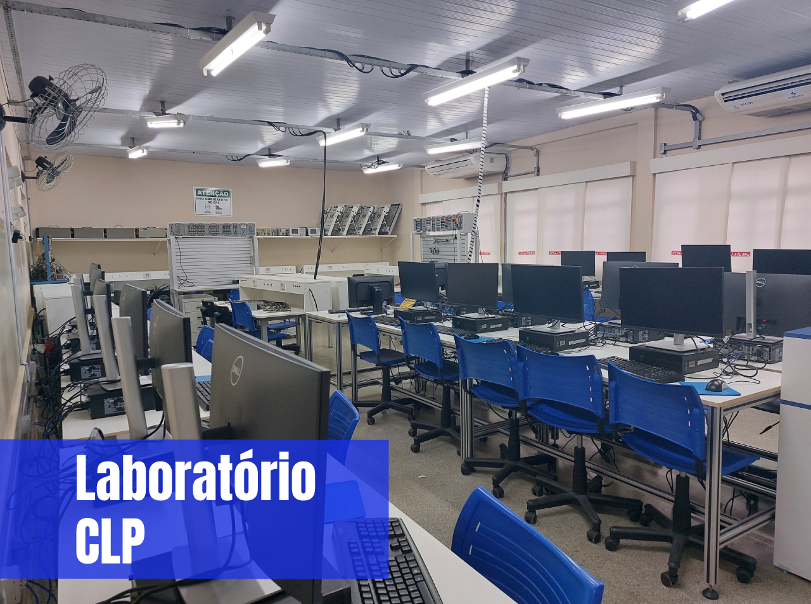
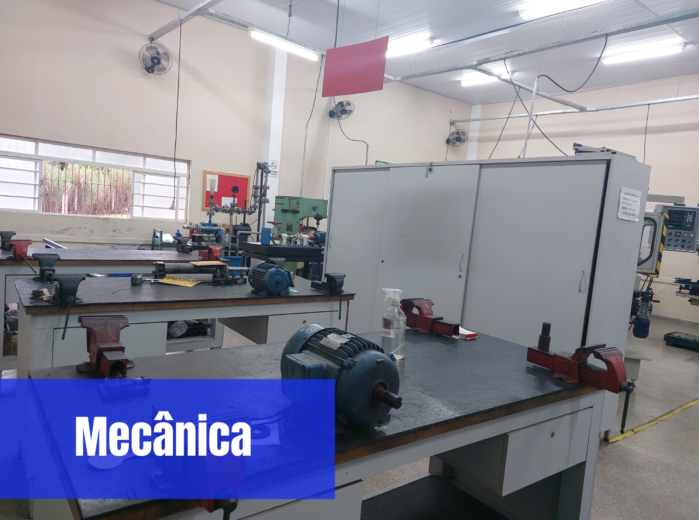

O CLP é um computador especializado que monitora e controla o funcionamento de máquinas e equipamentos, com base em um programa desenvolvido previamente.

Oferece diversos livros com relação aos cursos disponíveis para dar suporte a todos os alunos interessados.

Disponibiliza equipamentos para ajudar os alunos de Eletromecânica com as aulas práticas, sendo necessário o uso obrigatório de óculos de proteção e botas para a segurança dos alunos.